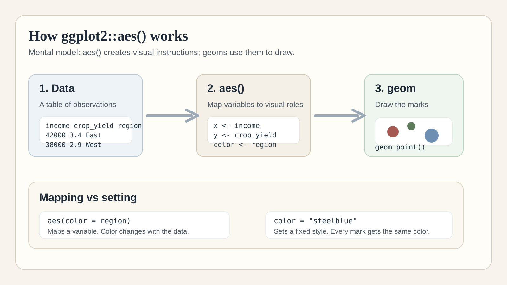

Mental model: aes() creates visual instructions; geoms use them to draw.
If I am honest, one reason I wanted to learn ggplot2 this week was that AI had started doing too much of my plotting for me.
It was fast. It was convenient. But it also left me with a quiet question: do I actually understand what I am looking at well enough to trust it?
That question pushed me back to the basics. And one idea in ggplot2 finally clicked for me:
aes() does not draw anything. It maps data to visual roles.
The 3-part idea behind ggplot2
At a high level, every ggplot2 chart has three core pieces:
- Data: the table you are plotting
- Mapping: which variables should control which visual roles
- Geom: the thing that actually gets drawn, like points, bars, or lines
That middle layer is where aes() lives. In plain English, aesthetics are the visual channels a plot can use: position, color, size, shape, fill, grouping, and more.
The job of aes() is to connect variables in your data to those visual channels.
The mental model that helped me
aes() creates a visual instruction table from your data, and geoms read those instructions to draw the plot.
What aes() is doing
When I write this:
ggplot(df, aes(x = income, y = crop_yield)) +
geom_point()I am not telling ggplot2 to draw points directly inside aes(). I am saying:
- Put
incomeon the x-axis - Put
crop_yieldon the y-axis - Then let
geom_point()use those mapped roles to draw the chart
The 2 rules I want to remember
1. aes() does not draw anything
aes() is not a plotting command. It is a mapping command.
It tells ggplot2 how the variables in a dataset should behave visually.
The geom is what actually draws.
2. Anything inside aes() should usually evaluate to one value per row
If a dataset has 100 rows, then an expression inside aes() should usually produce 100 values, one for each row.
That is how ggplot2 knows what x-position, y-position, color, or size each observation should get.
aes(x = income)
aes(size = population)
aes(x = log(income))
aes(fill = exports > 0)6 examples of mapping data to visual roles
aes(x = income)
Maps income to horizontal position.
aes(y = crop_yield)
Maps crop_yield to vertical position.
aes(fill = direction)
Maps categories in direction to fill color.
aes(size = population)
Maps population to point size.
aes(shape = region)
Maps region to symbol shape.
aes(x = log(income))
Maps a transformed variable to the x-axis instead of the raw one.
The important point is not memorizing every possible argument. It is learning to ask one simple question: what variable is being mapped to what visual role?
The clarification beginners need early: mapping is not the same as setting
These two lines are not doing the same thing:
aes(color = region)
color = "steelblue"The first one maps a variable to color, so the color changes with the data. The second sets a fixed style, so every point gets the same color.
Maps data
ggplot(df, aes(x = income, y = crop_yield,
color = region)) +
geom_point()Sets a style
ggplot(df, aes(x = income, y = crop_yield)) +
geom_point(color = "steelblue")Why this matters even more in the age of AI
AI can help us make charts faster. I use it too. But speed is not the same thing as understanding. If I cannot look at plotting code and tell what is being mapped, what is being set, and what the geom is doing, then I am outsourcing too much judgment.
Visualization still needs judgment. We still need to validate whether:
- the chart matches the question we are asking
- the variables are mapped in sensible ways
- a transformation changes the meaning of the plot
- a visual distinction reflects real structure in the data
The takeaway I am keeping
I do not need to memorize every ggplot2 argument to start making sense of the package.
datagives the observationsaes()maps variables to visual rolesgeomdraws the result
If you are also learning ggplot2, this is where I would start: not with every possible chart, but with the question,
what is this code mapping, and what is it drawing?